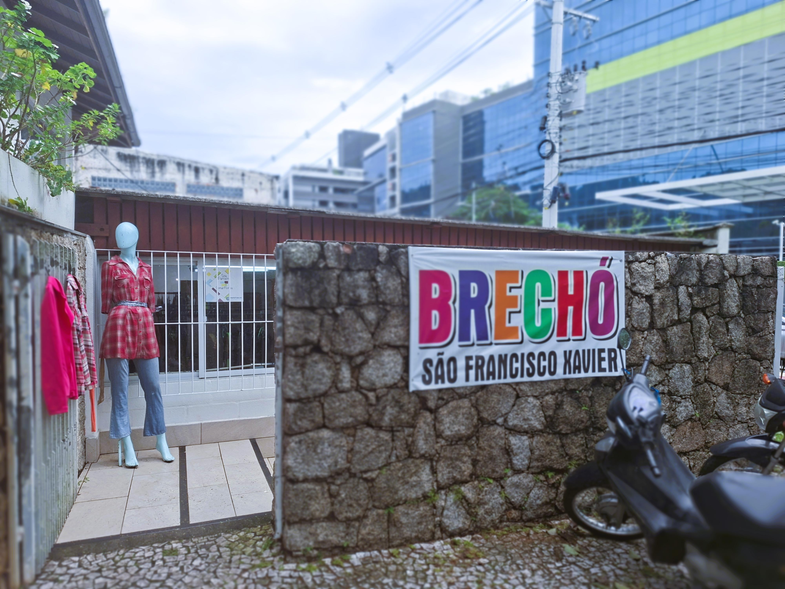
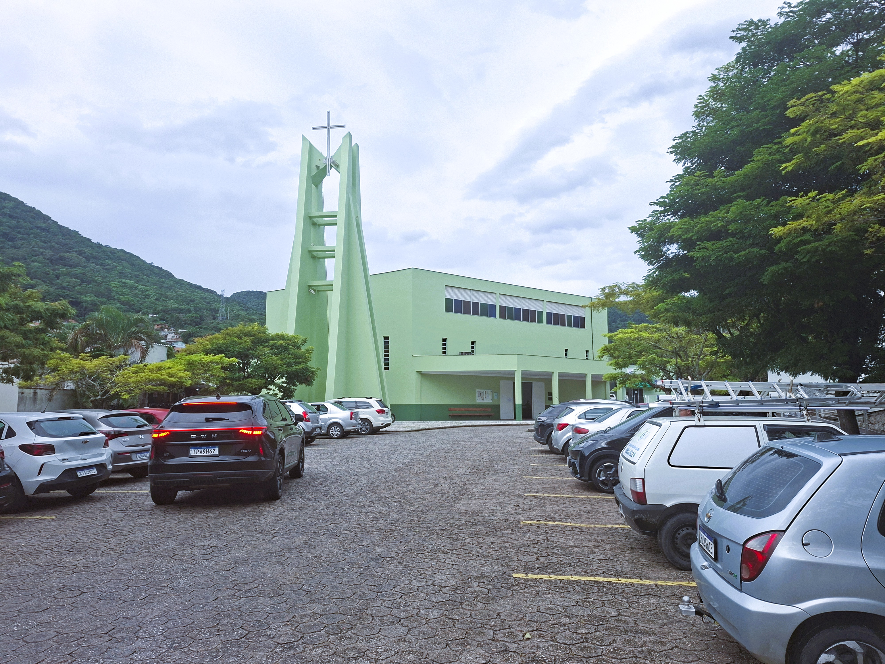

Conheça um espaço onde cada peça carrega uma nova história. Nosso brechó beneficente une estilo, sustentabilidade e solidariedade em uma iniciativa feita com carinho para a comunidade. Aqui, suas compras ajudam a transformar vidas e incentivar um consumo mais consciente. Preparamos tudo com cuidado para que você encontre roupas e acessórios para fazer a diferença. Venha fazer parte dessa corrente do bem e descobrir tesouros únicos esperando por você!


O Brechó da Paróquia São Francisco Xavier nasceu como uma iniciativa beneficente feita com carinho, solidariedade e compromisso com a comunidade. Mais do que oferecer roupas e oportunidades acessíveis, o projeto busca transformar pequenos gestos em apoio concreto para ações de caridade e para os diversos trabalhos realizados pela paróquia em favor do crescimento, da dignidade e do bem-estar das famílias da região. Cada doação, cada visita e cada contribuição ajudam a fortalecer uma corrente de cuidado coletivo, esperança e acolhimento para todos que fazem parte dessa caminhada.
O Brechó São Francisco Xavier está localizado na
Rodovia Virgílio Várzea, 538, Monte Verde, Florianópolis.
O atendimento acontece de:
Terças às sextas, das 14:00 às 18:00